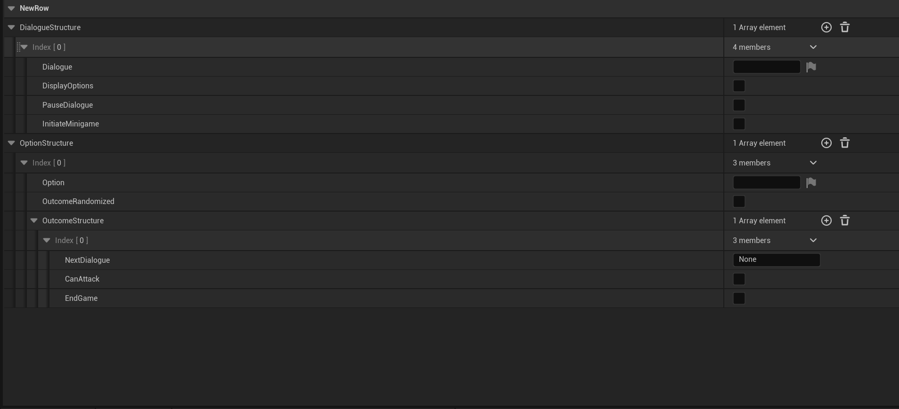
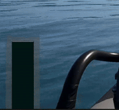

Nav Sim
This is the project I've worked on for my first internship of the two I have to do.
In this project I've contributed to a fuel component, dialogue system with randomized outcomes,
a minigame that works together with the dialogue system, and a quest system.
Languages: UE Blueprints
Software: Gitlab, Unreal Engine, redmine
Time Spent: 4 months
Programs: Unreal Engine
People: 4
Dialogue System

The dialogue system was a system I made to make the scenario I came up with functional. Since we couldn't leave the ship as the play, I had to find a more creative way around it. this was the best way I believed i could display a story.

To store the dialogue, i decided to make a data table with an array of structures that store the dialogue, and the options for the dialogue
(e.g. if it should display options or pause the dialogue). This can be filled in with content, and we can take that from the data table to
use it in our scripts.
We have a total of four structures in the Data Table. The main structure, Dialogue structure, Option structure,
and the outcome structure. The option structure is used to store the option, and make the option buttons.
The outcome is also stored in the option structure. Infact, there can be multiple outcomes that the dialogue system
can randomize.
In the outcome structure you can select the row that is the next part of the dialogue, if the minigame can be initiated, and if the game has
to end when you, for example, end up in the wrong ending.
This section is very direct. Here we get references to the quest manager and the ship we want the dialogue system we want the dialogue be active in.
Here, we create the dialogue widget if it is not there yet, and add it to to the viewport. Another pretty direct event, but this is the main preparation for the dialogue system. Because what is a dialogue system without a widget to place the dialogue on?
Over here is where we get to the longer explanations. First thing's first, we check if the Row name variable has a row name inside of it. If this is true,
we continue on with the functionality. On the other hand, if it is false it checks if it shouldn't end the game. If this is true, we call the function "Reset Scenario"
if this is false, it ends the game.
Back to the first branch, we check if the Data Table is valid. If that is the case, we get the variables from the data table and all it's stored values before writing the text.
After that, we arrive at yet another branch. Here we check if the minigame should be initiated based off of the boolean that you can check in the outcome structure.
We check if the minigame manager doesn't exist yet. If it doesn't, it instantiates the minigame widget.
We move on to the next branch, checking if the dialogue should be paused. In the case of not having to we grab the array index, which decides what line of dialogue we are at right now.
If it is false it shows the options.
Here, we set every variable to it's initial value and we enable the ship being able to move again, which we disable in another script that will not be listed below. This will help with using the dialogue system in other scenarios.
Another very direct section that doesn't need a very detailed explanation. We have the data table and the row. Using those two variables, we get the values connecting to the row name and give that to the variables stored in the script.
Option Button
This is where the option array mentioned in the explanation of the data table comes into play. We get EVERY option and loop through each of them, getting the data and assigning that data to a button that gets created.
We pass through a check where we see if the "randomized outcome" is checked. If that is the case it grabs a random outcome, and if that is not the case it takes the only index of that array.
After that, we have a small section where we have to see if the suspicious person has to attack. We do that using a weighted float of 0,5 which makes it a 50/50 chance to get the minigame.
At last, the buttons get aligned in a column and we move on to the next part of the functionality.
Since there was an issue with the input of the mouse, causing the player to have to double-click to continue the dialogue, I created an "OnMouseButtonDown" event. This checks if it is the left mouse button that was pressed, and if the dialogue isnt paused or still writing out, it runs the dialogue functionality again.
In that same widget, we have an interaction button that we can hide and make visible. The reason why we do this in the same widget as the dialogue box is because making a whole other script for it is just not needed.
Here, we have a typewriter function. At first the text would just appear on the screen. nothing else happened.
I felt it was a little bit underwhelming, so I went ahead and added a typewriter functionality to give the dialogue some life.
What happens here is we take the sentence that we want to type out from the dialogue manager, and we give that to this event.
In this event we break the sentence up into singular characters, and one for one we give the letters to the "displayed text" variable.
This gets updated until the dialogue character index is equal to the sentence's index.
Once we have the whole sentence, you'll be able to click again and we reset the
displayed text and dialogue character index.
At last, we need the option we selected to go through to the dialogue manager.
First, we reset the dialogue index so the dialogue can start from the point it is supposed to start.
Then we give the stored outcome, that we stored from the dialogue widget into this button,
to the row name in the dialogue manager and we run the dialogue functionality using that row now.

Fueltank Component
This component was created because I wanted to add a feature that could serve as a form of time limit while also fitting with the theme of the game. We all know most modern boats use fuel. So, I decided to make a fuel tank that goes down depending on how much energy the boat is using.
First, we want the player to start with a full tank. I haven't had the time to make this customizable. We grab the max fuel that you can set in the ship itsself (So the amount of fuel depends on the ship), and set the current fuel equal to the amount we gave the ship that we are using.
Here, we've got a “Request Fuel” function.
Initially, this was just giving back the full requested amount regardless of whether
that fuel was actually available, which obviously wasn't ideal.
So, I updated it to return only what's available, and to make sure we don't EVER go below zero.
We take the Requested Fuel input and make sure it's at least 0. (the max(0, Requested Fuel) node right at the start.)
This prevents negative requests.
Then we look at the Current Fuel and use a min node to compare it with the clamped request.
This gives us the actual amount of fuel we can safely give — the smaller of the two values.
We store that in a Given Fuel variable.
Next, we subtract that amount from Current Fuel, and again use max(0, result) to make sure
the fuel level doesn't drop below 0.
Finally, we update the Current Fuel with this new value, return the Given Fuel,
and that's it! Now we're safely giving out fuel only if it's there, and keeping
everything nice and clean under the hood.
Since the variable was set on private, I still wanted a way to atleast get to the variable to give the amount to scripts. So, all we do here is we give the current fuel to the output node of the function as a pin.
Here we've got a “Check Fuel Tank” function.
Before, I didn't have a clean way to get the total fuel across all tanks and engines, so I set up this loop to handle it.
First, we go through all Fuel Tanks, grab their current and max fuel, and add those values together.
Then we loop through all Engines, grab the buffer fuel, and add that to the current fuel total.
At the end, we return both the combined Current Fuel and Max Fuel, giving us a full picture of the system's fuel status.
This is used when lowering the fuel tank widget's bar.
This is a “Request Fuel” function seperate from the other request fuel function we just looked at.
this function pulls from multiple Fuel Tanks to fulfill a request.
We start by looping through each tank and calling the internal Request Fuel function,
which returns however much that tank can give. Each result gets added to a running Given Fuel total.
After each tank, we check if we've already met or exceeded the Requested Fuel amount.
If we have, we stop the loop early to avoid pulling more than we need.
Finally,
we return the total fuel we managed to gather. Either the full request or as much as we could get.
Efficient and safely capped.
To get the fuel to the engine, we have decided to put a buffer tank between the two to control the amount of
fuel going into the engine. This is the fuel/minute divided by two.
First, we check how much fuel we need from the fuel tank. We do that by subtracting the fuel we have from the maximum
amount of fuel, and request that from the fuel tank. We add the given amount to the
buffer tank.
after that, we get the absolute of the power percentage (abs ensures we cannot go into the minus, preventing the fuel from
going back up when we drive backwards.), the fuel used per minute divided by 60 (for the seconds), and the delta time (represents the time
elapsed between the current and previous frame in a game), and we multiply all of that together. That amount we subtract from the buffer tank.
This is the fuel tank's widget. Here, we call the "CheckFuelTanks" to get the maximum amount and the total current amount. From here, we divide the current fuel through the max fuel, which will give us a number between 0 and 1 based on the values of the fuel tank.
Minigame
Because my scenario felt very simple and repetitive, I decided to add a minigame. Around that time, I had been playing a lot of Stardew Valley. So, I decided to go ahead and re-create the fishing minigame.

Here we instantiate the minigame widget and enable the input. This is pretty self-explanatory. It makes the widget and it adds it to the viewport.
Here we have two events. These get called depending on if you press the "g" button, or release the button. This is a timeline to move the green area up and down, giving the alpha depending on how long you have the button pressed down (max being 1, min being 0). It gives the alpha to an event called "SlideTo" in the minigame widget
Now this is a function that is very crucial to the functionality of the minigame. To get the bar up, we need to have the icon and the green area overlapping. Since there is no collision component for widgets, we had to do it using a function.
This is the start of the functionality. First, we pick the first random end position of the icon, we get a random movement speed, and it calls the set random position every four seconds if the "PlayMinigame" bool is true.
This part is the most important part of the minigame. As said before, the new position gets picked every four seconds. Every frame
Quest System